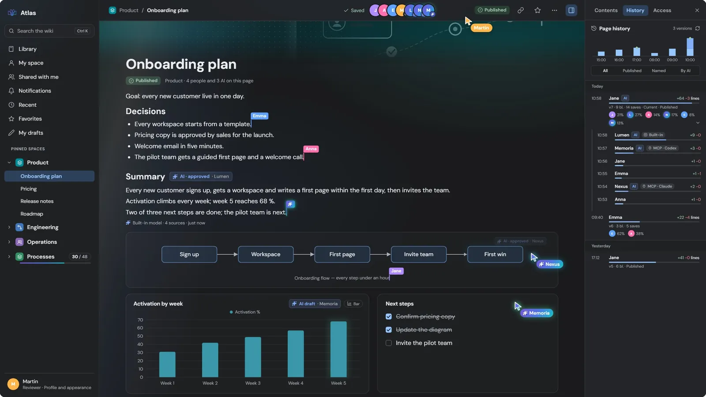
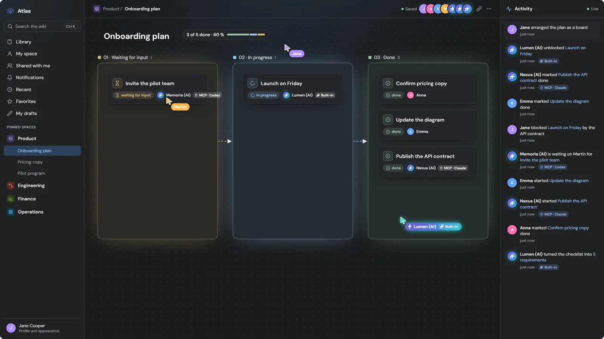
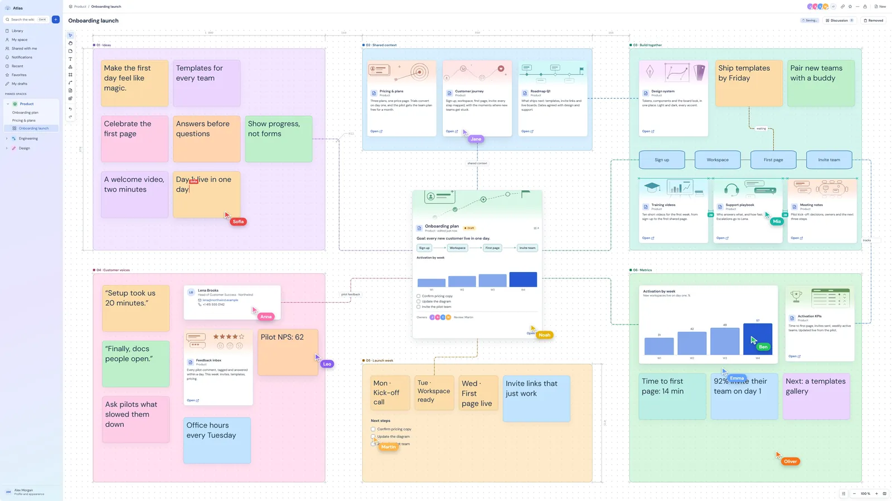
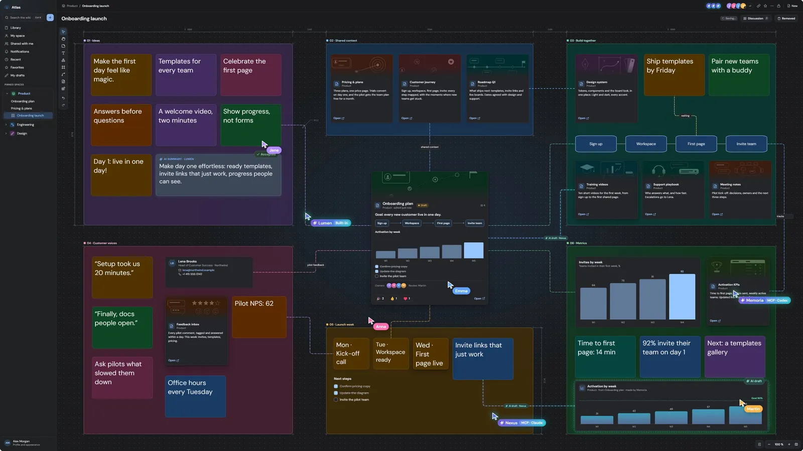
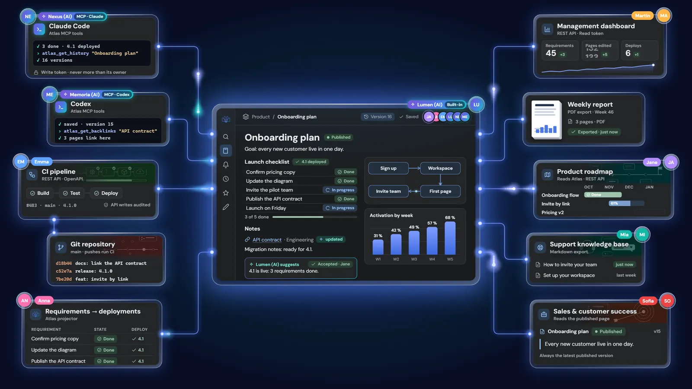
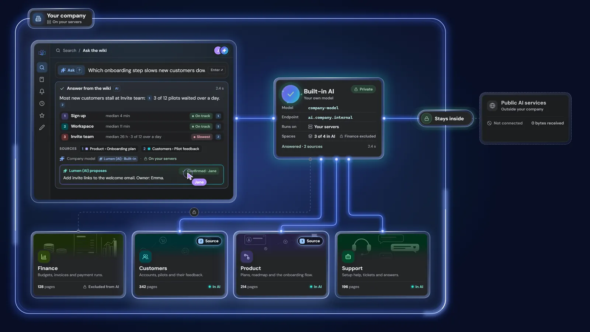
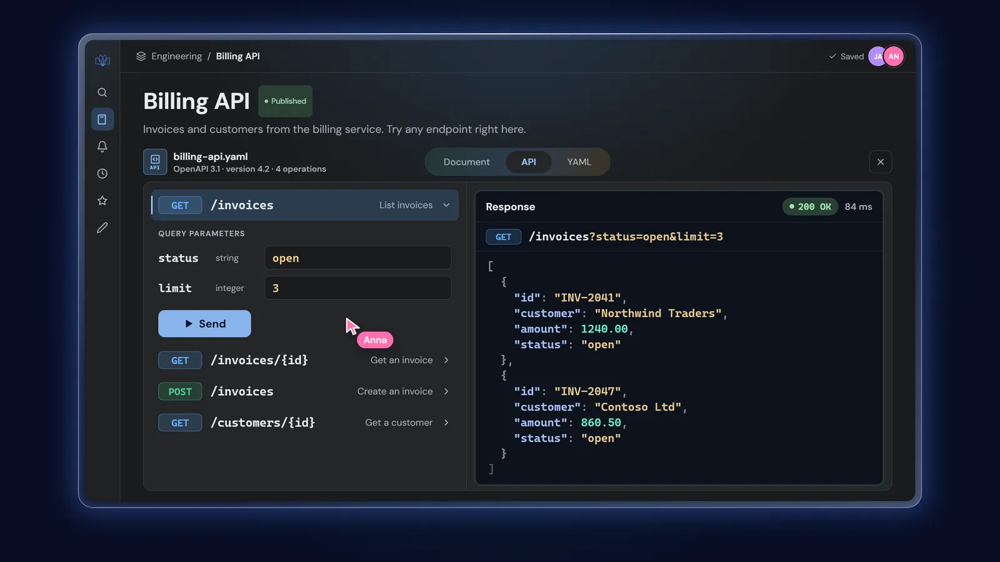
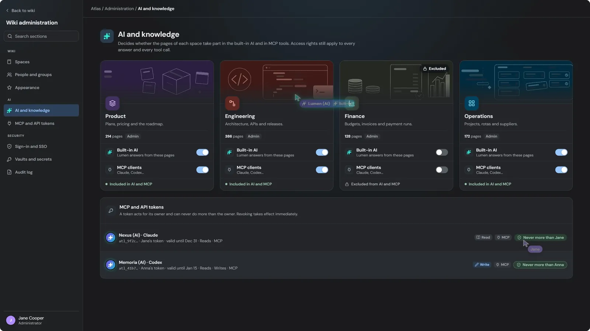

01 · TEXT
Text isn't enough?
Draw it.
Type /diagram and the flow draws itself in the page. Charts, tables and checklists live right next to the words, and smart guides snap everything into place.

The boring parts automated. The rest, together.
Atlas is an AI-native wiki: your team and your AI write side by side, with a local model on your own servers or the best models in the cloud. Your development pipeline writes to it, and your business reads from it.
Every process has to be written down. It starts with one person and an empty page, and it only grows from there.
Type /diagram and the flow draws itself in the page. Charts, tables and checklists live right next to the words, and smart guides snap everything into place.

Live cursors, mentions and comments. Three people type in the same page at once, and nobody overwrites anybody.

Cards, frames, connectors and the pages themselves on one infinite board, with the whole team live on it.

Claude, Codex or the AI built into Atlas write with you, on the same page, with their own cursors. They draft, you decide.

AI isn't a chat box bolted onto the side. It reads, writes and answers inside the wiki, next to the people, with the same permissions and the same history.
Run the built-in assistant on any OpenAI-compatible server inside your company. No commercial AI needed.
/v1 endpointUse Claude or OpenAI models for the built-in assistant, and let coding agents join the team over MCP.
Answers built from verified sentences, each with numbered sources you can open, taken only from pages you may read.
A short summary of a long page, with citations. Select any text to have it explained or to find where else it appears.
Fix, shorten, rephrase, translate or give your own instruction. You see a preview first, Apply it, and one Undo takes it back.
An outline for an empty page; before publishing, spelling notes, a change description and suggested tags.
AI works in the same live page and on the same boards, with its own cursor, so you can see who is writing what.
Recognised secrets are never sent to a model. Admins see usage and quality, and everything still works with AI switched off.
Snappy enough to write in, trustworthy enough to run your work by.
Live cursors, presence, comments and @mentions. Several people write in the same page at once and nobody overwrites anybody.
Mermaid and drawn diagrams, live charts, checklists and infinite boards with cards, frames and connectors.
Write in a draft, review, then publish. Every version is kept with who changed what and when, and any of them can be restored.
Checklists turn into trackers that people and AI move forward together, linked back to the page they came from.
Permissions per space and page, private drafts and secrets that only the right people can see.
Single sign-on with your identity provider over OpenID Connect. Local accounts stay available until you switch them off.


Atlas plugs into the way you build software. Script it, deploy it and wire it into your pipeline.
/api/v1 with personal tokens (read, or read and write). The OpenAPI document is served at /api/v1/openapi.json./mcp for Claude Code and other agents. They write drafts, and publishing waits for your confirmation in Atlas.# Profile → API: create a personal token, then
export ATLAS_TOKEN='…'
claude mcp add --transport http --scope user atlas \
https://atlas.example.com/mcp \
--header "Authorization: Bearer $ATLAS_TOKEN"
# in Claude Code: /mcp → atlas is connected
> Find our VPN setup guide and draft a summary page.# an admin enables the API for your account first
curl --header "Authorization: Bearer $ATLAS_TOKEN" \
"https://atlas.example.com/api/v1/spaces?limit=50"
# search published pages
curl --header "Authorization: Bearer $ATLAS_TOKEN" \
"https://atlas.example.com/api/v1/search?q=onboarding"
# the whole API, as OpenAPI
curl --header "Authorization: Bearer $ATLAS_TOKEN" \
"https://atlas.example.com/api/v1/openapi.json"

Two Docker images and one Compose file. That is the whole install.
Atlas and PostgreSQL 18 with pgvector, as two ready-made images.
mkdir atlas && cd atlas
curl -fsSLO \
https://github.com/Scalesoft/atlas/raw/main/docker-compose.ymlPick the images once in .env; every later docker compose command uses them too.
cat > .env <<'EOF'
ATLAS_IMAGE=ghcr.io/scalesoft/atlas:latest
ATLAS_POSTGRES_IMAGE=ghcr.io/scalesoft/atlas-postgres:latest
EOF
docker compose up -dOpen http://localhost:8080. The first installation is protected by a one-time token, printed in the server log, so a random visitor can never become the admin.
docker compose logs atlas | grep "first installation token"Then, all optional: connect your company sign-in (OIDC), YouTrack, or import from Wiki.js. Each step can be done later under wiki administration.